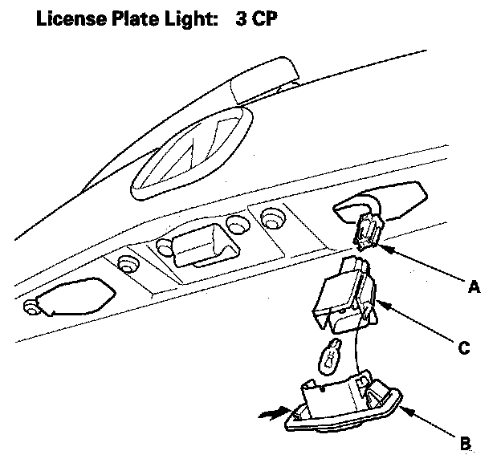

License Plate Lamp: Service and Repair
License Plate Light Replacement
1. Pull the license plate light assembly out, and disconnect the 2P connector (A) from the light.
2. Separate the lens (B) and housing (C), then remove the bulb.
3. Install the light in the reverse order of removal.